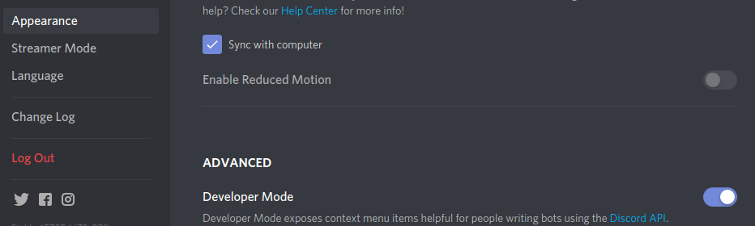
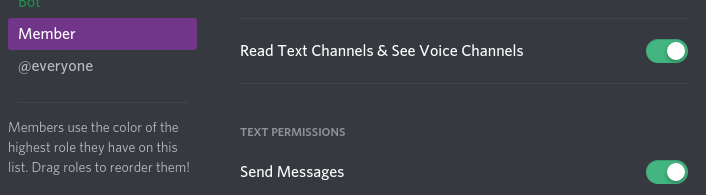
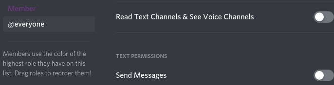
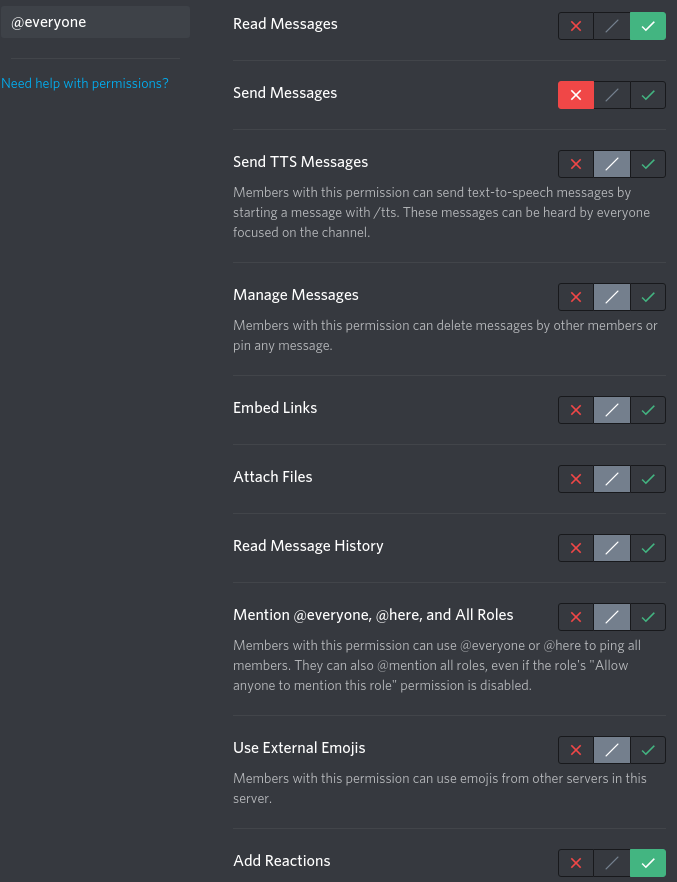
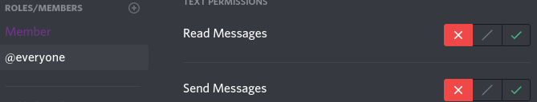
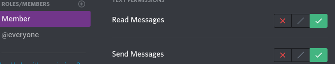
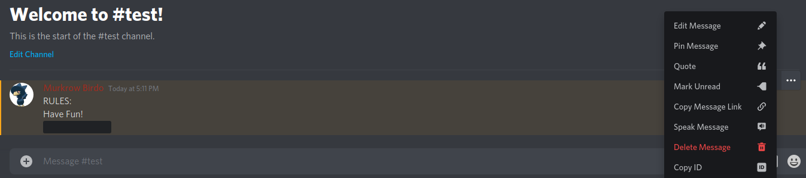
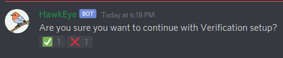

Here are some steps to get started
You first need to enable developer mode under user settings and Appearance:
Next, create a role called "Member" (note that the name MUST be EXACT) with any color and with the permissions send and read messages (Permissions integer: 3072)
Then, change the permissions for @everyone to not allow read messages or send messages:
Next, change the channel permissions for the channel you want to verify from to allow everyone to add reactions. Then, set every other channel permission something like the second image here.

Next, copy the id of the message you want people to react to:
Then, type "-vsetup [paste id]" and react with the check mark before 30 seconds.
